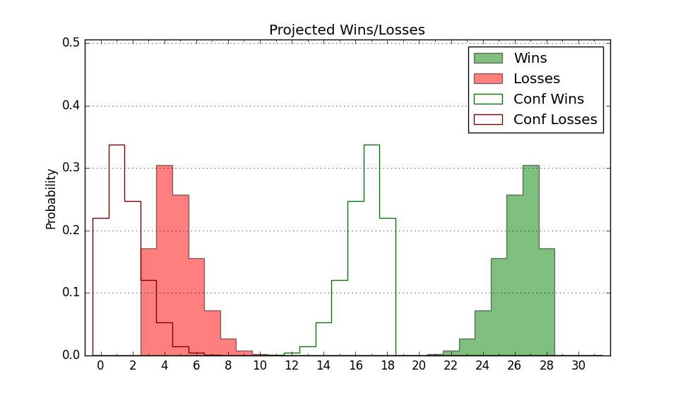

| Home | Game Probabilities | Conferences | Preseason Predictions | Odds Charts | NCAA Tournament |
| City: | Spokane, Washington | |
| Conference: | West Coast (1st)
| |
| Record: | 0-0 (Conf) 7-3 (Overall) | |
| Ratings: | Comp.: 35.5 (3rd) Net: 37.0 (4th) Off: 124.8 (7th) Def: 87.8 (7th) SoR: 75.9 (28th) |
| Remaining | ||||||
|---|---|---|---|---|---|---|
| Date | Opponent | Win Prob | Pred. | |||
| 12/18 | Nicholls St. (239) | 99.2% | W 94-58 | |||
| 12/21 | Bucknell (226) | 99.1% | W 91-57 | |||
| 12/28 | (N) UCLA (24) | 76.7% | W 73-65 | |||
| 12/30 | @ Pepperdine (212) | 96.6% | W 90-66 | |||
| 1/2 | Portland (300) | 99.6% | W 97-57 | |||
| 1/4 | @ Loyola Marymount (188) | 96.0% | W 85-62 | |||
| 1/8 | San Diego (297) | 99.5% | W 96-55 | |||
| 1/11 | Washington St. (72) | 94.8% | W 89-68 | |||
| 1/16 | @ Oregon St. (58) | 79.4% | W 77-68 | |||
| 1/18 | Santa Clara (70) | 94.7% | W 88-67 | |||
| 1/25 | @ Portland (300) | 98.5% | W 93-62 | |||
| 1/28 | Oregon St. (58) | 92.9% | W 81-63 | |||
| 2/1 | @ Saint Mary's (53) | 76.7% | W 75-67 | |||
| 2/6 | Loyola Marymount (188) | 98.8% | W 89-58 | |||
| 2/8 | @ Pacific (267) | 97.9% | W 88-60 | |||
| 2/13 | San Francisco (49) | 91.4% | W 82-65 | |||
| 2/15 | Pepperdine (212) | 99.0% | W 95-61 | |||
| 2/19 | @ Washington St. (72) | 84.3% | W 85-72 | |||
| 2/22 | Saint Mary's (53) | 91.8% | W 79-63 | |||
| 2/27 | @ Santa Clara (70) | 84.0% | W 84-72 | |||
| 3/1 | (N) San Francisco (49) | 85.3% | W 80-68 | |||
| Previous | Game Score | |||||
| Date | Opponent | Win Prob | Result | Off | Def | Net |
| 11/4 | Baylor (10) | 80.0% | W 101-63 | 16.3 | 17.0 | 33.3 |
| 11/10 | Arizona St. (56) | 92.4% | W 88-80 | 4.8 | -15.1 | -10.3 |
| 11/15 | UMass Lowell (177) | 98.7% | W 113-54 | -1.9 | 22.8 | 20.8 |
| 11/18 | @San Diego St. (48) | 75.8% | W 80-67 | 5.7 | 6.5 | 12.2 |
| 11/20 | Long Beach St. (286) | 99.5% | W 84-41 | -9.0 | 16.0 | 7.0 |
| 11/27 | (N) West Virginia (38) | 82.5% | L 78-86 | -17.1 | -10.6 | -27.6 |
| 11/28 | (N) Indiana (55) | 86.8% | W 89-73 | -3.4 | 5.0 | 1.6 |
| 11/29 | (N) Davidson (125) | 96.2% | W 90-65 | -3.0 | 5.8 | 2.9 |
| 12/7 | (N) Kentucky (9) | 67.4% | L 89-90 | 4.9 | -11.4 | -6.5 |
| 12/14 | (N) Connecticut (8) | 63.4% | L 71-77 | -12.5 | -3.6 | -16.0 |
| Stats & Trends | |||||
|---|---|---|---|---|---|
| Current | Day | Week | Month | Season | |
| Composite | 35.5 | -0.1 | -1.8 | +1.7 | +4.1 |
| Comp Rank | 3 | -- | -- | -- | +1 |
| Net Efficiency | 37.0 | -0.1 | -3.0 | -6.5 | -- |
| Net Rank | 4 | -- | -1 | +3 | -- |
| Off Efficiency | 124.8 | -0.1 | -2.2 | -2.1 | -- |
| Off Rank | 7 | -- | -2 | +8 | -- |
| Def Efficiency | 87.8 | -0.0 | -0.8 | -4.4 | -- |
| Def Rank | 7 | -- | -1 | +9 | -- |
| SoS Rank | 8 | +1 | +3 | +89 | -- |
| Exp. Wins | 26.2 | +0.0 | -1.0 | -0.1 | +0.7 |
| Exp. Conf Wins | 16.5 | +0.0 | -0.3 | -0.1 | +0.2 |
| Conf Champ Prob | 93.1 | +0.7 | -2.4 | -0.5 | +5.0 |

| Advanced Stats | ||
|---|---|---|
| Stat | Value | Rank |
| Off Eff FG % | 0.576 | 26 |
| Off Ast Ratio | 0.206 | 4 |
| Off ORB% | 0.336 | 62 |
| Off TO Rate | 0.108 | 7 |
| Off FT Ratio | 0.370 | 104 |
| Def Eff FG % | 0.416 | 5 |
| Def Ast Ratio | 0.110 | 21 |
| Def ORB% | 0.202 | 9 |
| Def TO Rate | 0.156 | 145 |
| Def FT Ratio | 0.293 | 100 |